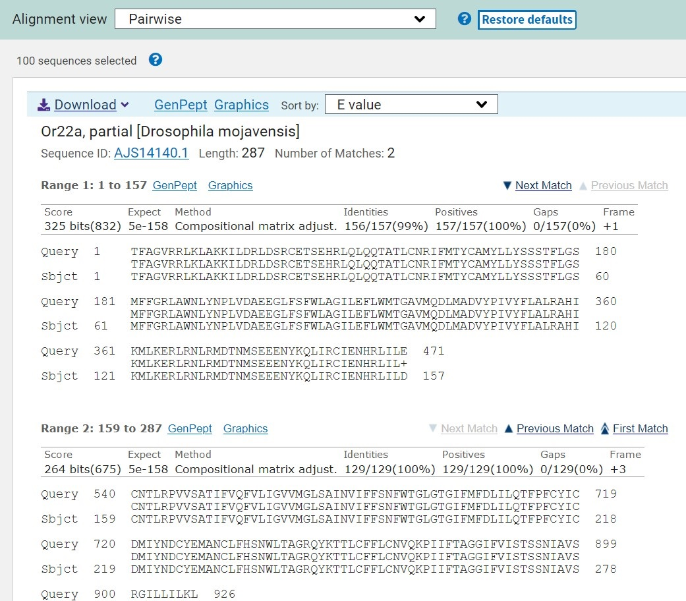
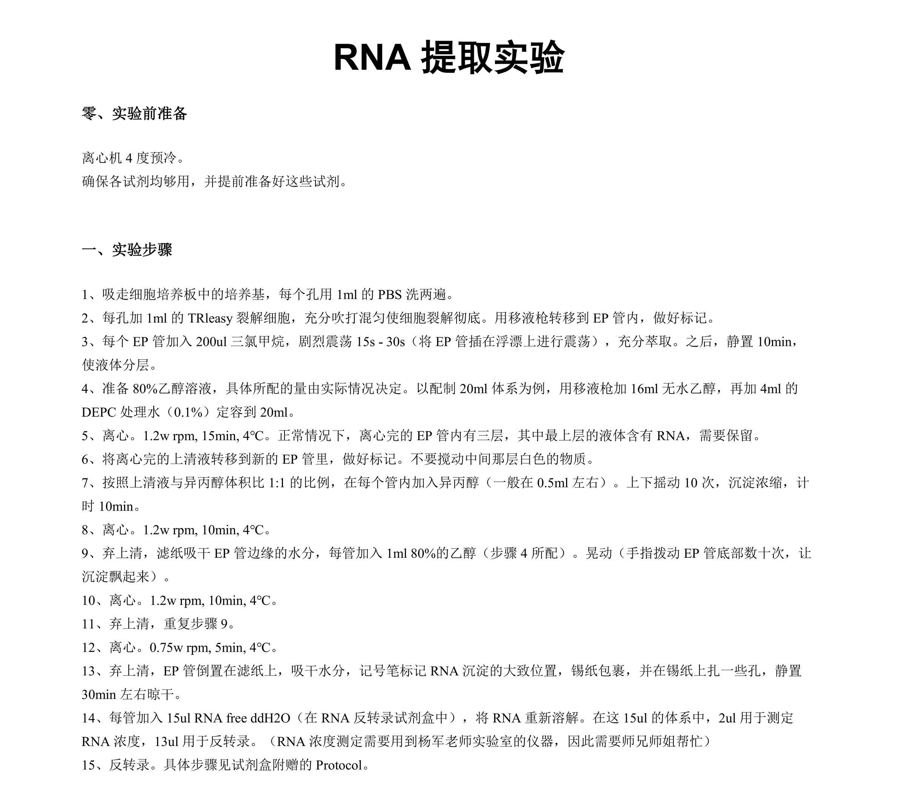
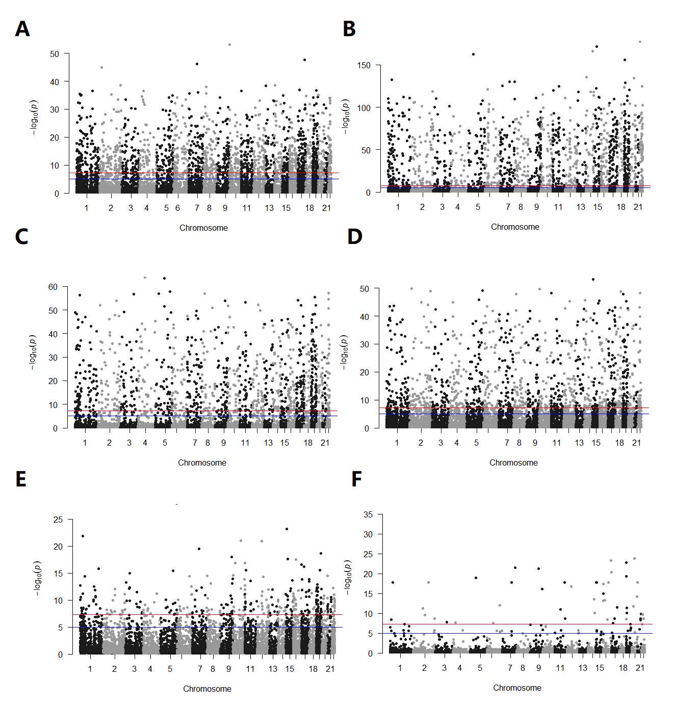

Dawei Huang’s Lab

- To reveal the genetic mechanism of banyan-fig wasp symbiosis.
- Annotate chemoreceptor receptor genes of serveral fig wasp species using BLAST, IGV, bioeditor and some other bioinformation tools.
- I have annotated 2 species' olfactory receptor genes in this project: A.mellifera and D.melanogaster(which is outgroup in this program)
Qiang Zhao’s Lab

- This is a project under National Undergraduate Training Programs for Innovation and Entrepreneurship.
- To explore biomaterials that can inhibit vascular calcification.
- We do a lot of wet-lab assays: Cell culture, RNA extracting, qPCR, ...
Shunmin He’s Lab

- To character the variants of VNTR in Chinese population and demonstrate the association between VNTR variants and some diseases.
- Serveral Python and Bash scripts have been wrote for data analysising and visualizing.
- Also learnt data analysis skills of scRNA-seq data.
- ...And completed my graduation project under Dr.He's supervision —— "Application of evolutionary analysis of polygenic traits based on RHPS-Related method in East Asian population".